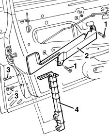
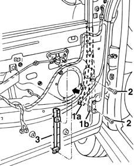

7005D22 front side door descending window glass guide (one) - r r with door panel (and support frame) removed
- Path
- Procedures > 70 FITTINGS > 7005 PASSENGER COMPARTMENT FRONT SIDE DOORS > 7005D front side door window glasses > 7005D22 front side door descending window glass guide (one) - r r with door panel (and support frame) removed
- Kind
- repair procedure (removal / refitting; the operation number is the code)
- Applies to
- all engines; all production periods
- Interactive page
- https://sloeber94.github.io/elrnDB-fMltpl/en/#/2892035
Applies to: all engines; all production periods
 Removing
Removing
 Refitting
Refitting7005A04 front side door water guard protection - r r or replace with door panel removed .
To remove the rear guide, proceed as follows.
1. Undo the bolts.
2. Disengage the bracket from the opening intermediate control device and remove it.
3. With the window raised, undo the bolts.
4. Remove the rear window guide.

Applies to: all engines; all production periods
To remove the front guide, proceed as follows.
7005E30 object pouch on one front side door r r .
1. With the window fullfy raised, remove the front run channel (1a) from the front window guide (1b).
2. Undo the bolts.
3. Remove the front window guide.

Applies to: all engines; all production periods
Refitting
RemovingCheck that the guides are not damaged.
Fit the guides.
Tighten the bolts.
Engage the opening intermediate control device on the bracket, then fit the bracket.
Fit the front run channel on the front guide.
Check that the window is working properly.
7005E30 object pouch on one front side door r r .
7005A04 front side door water guard protection - r r or replace with door panel removed .
Topics linked from this page (2)
- 7005A04 front side door water guard protection - r r or replace with door panel removed
- 7005E30 object pouch on one front side door r r
Topics that link to this page (12)
- 5505B10 front door wiring - r r
- 7005C10 front door outer handle - r r with door panel removed
- 7005C11 front side door outside handle r r
- 7005C42 front side door barrel/lock connecting linkage - r r with door panel removed
- 7005C66 front side door safety catch link r r with door panel removed
- 7005C67 front side door safety catch link r r
- 7005D14 front side door descending window glass - r r with door panel (and mount frame) removed
- 7005D15 front side door descending window glass r r
- 7005D18 front side door descending window glass channel r r
- 7005D23 front side door descending window glass guide one r r
- 7005N20 front side door lock motor/catch assembly - rr with door panel and support frame removed
- 7005N21 front side door lock motor-lock assembley-r r